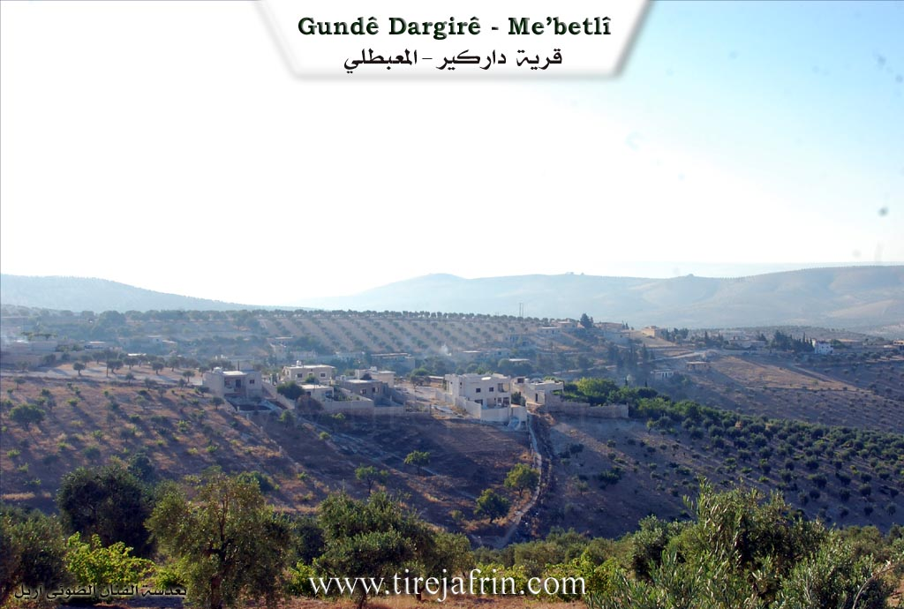
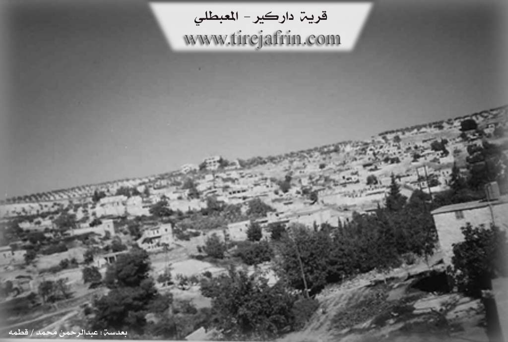

General Information
Nahiya (Subdistrict)
Mabeta
Also Known As
Dar Kabir, Dar Kir, Dargirê, Darkir, دار كبير, دار كير
Families, Clans, etc.
Bekirê Elîko, Bekirê Kêlê, Betalê Qere, Eljûja, Hemedê Ejik, Henî Elû, Hevîdê, Ibrîm, Mala Aqîl, Mala Bekî Elî, Mala Ebdê, Mala Şêx, Ocê, Omer Sefîno, Qere, Seydê Hesen, Têwit, Şêx Çîlê

Photos


Basic Information about Dargirê
Source: Ax û Welat
Etymology: Derived from a single large tree ('Darek bi tenê') or plane trees ('çinar') and the hill ('gir') where the village sits
Foundation Date/Period: Approximately 300 years ago
Caves: Şikeftên Kevmar
Number of Caves: 25
Springs: Bîra Hecmûra
Shrines: Ehmed Dede, Şêx Cemaleddîn
Ruins: Geliyê Şêxmîr
Trees: Dara Ziftê
Wells: Bîra Jorin, Bîra Jêrîn, Bîra Dargirê
Other Landmarks: Geliyê Avê, Geliyê Îbrahîm, Geliyê Alî, Çeqela
Source: Afrin 366
Etymology: Derived from Dar Gir meaning Big Tree, referring to a large black tree that historically stood in the area
Trees: Darê reş mezin, Darê tûra
Summaries
I. Summary from TirejAfrin Site of Dargirê (English)
According to the book جبل الكرد|Mountain of the Kurds (Afrin) - A Geographic Study by Dr. Mohammed Abdo Ali:
1 - PhD/Villages/Dargirê (دار كير), Dar Kir (دار كير), Dar Kabir (دار كبير) /3130n - 595h - 4km - 570m/:
- Dar Kər: Its literal meaning is "the big tree". The Arabic name is an inaccurate translation of the Kurdish name.
- A medium-sized village located on the southern slope of a plateau abundant with caves. Its residential areas spread on both sides of a steep watercourse sloping southward. The village's location is archaeological, evidenced by building stones and ancient manually-dug wells that are still used today.
And according to the book Afrin... Her River and Green Hills by writer Abdul Rahman Mohammed from Qatmah village:
1 - PhD/Villages/Darkir - Dar Kabir (دار كبير): A village in Kurd Mountain (جبل الكرد), belonging to Ma'batli District (ناحية المعبطلي), Afrin (منطقة عفرين), Aleppo Governorate (محافظة حلب).
It is a large village located in the central part of the mentioned mountain on the southern slope of a limestone plateau rich in caves from which streams flow in all directions. It is 4km southeast of Mabetli town. Its fertile land spreads above which are pastures and oak tree groves. It is bordered to the north by mountain elevations and several streams planted with olive trees, Mabetli town and Kokan Foqani village, and to the south by a stream valley planted with olive trees and mountain elevations and Taba Ghazi village and Buyuk Oba, and to the west by mountain elevations planted with olive trees and Brimjah village and Mirkanli, and to the east by a slope and plain planted with olive trees and the nearby Juwayq village. It has approximately 100 houses and is about 400 years old. Its old houses are stone and clay with flat wooden roofs, and the modern ones are cement extending in the south and east directions. It has an electricity network, primary school, mosque and olive press. The village drinks from a water network connected to Kokan village network in its northeast, and from cisterns that collect rainwater in winter. It connects to the district center by a paved road passing through its center to Mabetli town and Juwayq village. Its inhabitants cultivate rainfed crops on an area of 595 hectares: grains, legumes, olive trees and some fruit trees, nuts and almonds. They also cultivate irrigated crops on 4 hectares: summer vegetables and pomegranate trees. They pump water from artesian wells for this, in addition to raising sheep and goats. Among its most important families are: (Alko, Hamo, Sulaiman, Akkash, ...).
Village headman: Mohammed Akil Ahmed
Preparation and implementation: Director of Afrin Heritage website: Abdul Rahman Haji Othman
20/12/2013
II. Summary from Ax û Walat Transcript of Dargirê
Source: https://www.youtube.com/watch?v=mASawqlEJXc
The village of Dargirê, located in the Mabeta district of the Afrin region, holds a history deeply connected to the natural landscape and ancient dwellings. According to local elders and oral history, the name Dargirê is derived from a solitary, massive tree ("Darek bi tenê") that once stood on the hill ("gir") where the village was established. Some accounts suggest the name comes from "Dar girt" or relates to the plane trees (çinar) that historically dotted the area. While the region contains Roman-era wells suggesting ancient habitation, the modern village structure emerged approximately 300 years ago when the population moved out of caves to build stone houses.
Before this transition, the inhabitants lived in a network of caves known as Şikeftên Kevmar. The narrator notes there are nearly 25 such caves around the village. Interestingly, five of these caves were later converted into olive presses (mehser), utilized by prominent families such as Hemedê Ejik, Betalê Qere, Ibrîm, Seydê Hesen, and Henî Elû. Olive cultivation is central to the village's economy, with residents stating that olive trees were planted extensively around 200 years ago, replacing earlier vegetation of scrub and wild trees.
Socially, Dargirê is distinct within the Mabeta district. While the host notes that Mabeta is predominantly Alevi, the residents of Dargirê identify as Sunni Kurds. Despite this, they maintain syncretic traditions centered around the shrine of Ehmed Dede. Villagers visit this site on Thursdays to light candles and olive oil lamps, seeking cures for illnesses and making wishes. A specific ritual involves the Dara Ziftê (Pitch Tree) near the shrine; those suffering from warts visit on Wednesdays to cut a piece of the tree and place it on their skin without looking back. Another shrine, Şêx Cemaleddîn, located between Dargirê and Cûqê, was historically used for rain prayers during drought years.
The village social structure is built upon several core families. Elders mention the "Selef" (ancestral) families who lived in the caves, including Şêx Çîlê, Qere, Hevîdê, Têwit, and Eljûja. The narrator adds that the current village comprises about 250 households rooted in ten main families, including Bekirê Elîko, Ocê, Omer Sefîno, and Bekirê Kêlê.
Water sources are significant historical landmarks. The village relies on ancient wells believed to be Roman, specifically Bîra Jorin (Upper Well) and Bîra Jêrîn (Lower Well), also known as Bîra Dargirê. Another key source, Bîra Hecmûra, traditionally supplied water to four neighboring villages: Koka Jorîn, Koka Jêrîn, Cûqê, and Dargirê. The surrounding geography is defined by valleys such as Geliyê Şêxmîr, which contains ruins, and Geliyê Avê. Residents also preserve traditional practices, including folk medicine performed by specialists like Mihemed Dawûd, and communal games interpreted by locals as metaphors for defending their land.
Summary from Afrin 366 Transcript of Dargirê
Source: https://www.youtube.com/watch?v=PmhnHYdMxs4
The village of Dolgirê is an ancient settlement located in the Afrin region where the history of the community is deeply rooted in the landscape itself. According to an elderly resident named Ebû Henan the site of the village was originally wild mountain terrain before any houses were constructed. The earliest inhabitants did not build stone structures immediately but instead lived in caves. Ebû Henan recounts that there were initially seven households or heft mal residing in these caves. These early settlers were closely knit and described as being like brothers from a single lineage. The elder mentions specific ancestors such as Qere and Muhemmed whose descendants formed the core of the village population.
The name Dolgirê carries a specific etymological significance explained by the local elders. It is derived from the phrase Dar Gir which translates to Big Tree. This name refers to a massive black tree or darê reş mezin that once stood in the area and served as a defining landmark for the community. While the village is known as Dolgirê the elder notes that in other places similar locations might be referred to as Dorik or Dedey but here the identity is tied to the history of that great tree.
Socially the village is composed of several key families including Mala Aqîl Mala Ebdê Mala Şêx and Mala Bekî Elî. Although they maintain distinct family names the residents emphasize their common origins and unity. The current population estimates vary with speakers in the documentary suggesting between 225 and 350 households exist in Dolgirê. However the community has faced significant hardship. Ebû Henan laments that many residents have passed away due to deep sorrow and distress known as qehr or have left the region causing a decline in the active population.
Agriculture remains central to life in Dolgirê with the villagers primarily engaged in cultivating olive trees and vineyards. The village layout features traditional elements including an old water well located in the center. A specific mulberry tree called Darê tûra is also highlighted as a living foundation of the village. Geographically Dolgirê is situated near the town of Mabata which is visible from the village and serves as a local administrative center. Despite the modern concrete houses the presence of ancient caves and the oral history preserved by elders like Ebû Henan keep the memory of the early cave dwelling era alive.
Transcripts
Foundation/Origin Information of Dargirê
The village's location is archaeological, evidenced by building stones and ancient manually-dug wells.
Source: TirejAfrin Site
Historically, the area was inhabited by the Hemîdî tribe, and the modern village traces its lineage to five main founding families: Şêx Çîlê, Qera, Hecîdo, Tewet, and Elî Cîjo. The original settlement was located in a series of approximately 25 caves.
Source: Ax û Walat Transcript
Possible Village Name Meaning of Dargirê
Dar Kər: Its literal meaning is "the big tree". The Arabic name is an inaccurate translation of the Kurdish name.
Source: TirejAfrin Site
Its name originates from a single, prominent tree ("dar") that once stood alone on a hill ("gir").
Source: Ax û Walat Transcript
V. Links
- Tirejafrin:
http://www.tirejafrin.com/site/kura%20afrin%20%20%20mebetli%20-%20dargir.htm - Ax û Welat:
https://www.youtube.com/watch?v=PeXXBuU_SRU - Video:
https://www.youtube.com/watch?v=zndu3XdPLyI
https://www.youtube.com/watch?v=hS_gZ2dSpm8
https://www.youtube.com/watch?v=zYXW-tztybA - Ax û Welat:
https://www.youtube.com/watch?v=mASawqlEJXc - Afrin 366:
https://www.youtube.com/watch?v=PmhnHYdMxs4